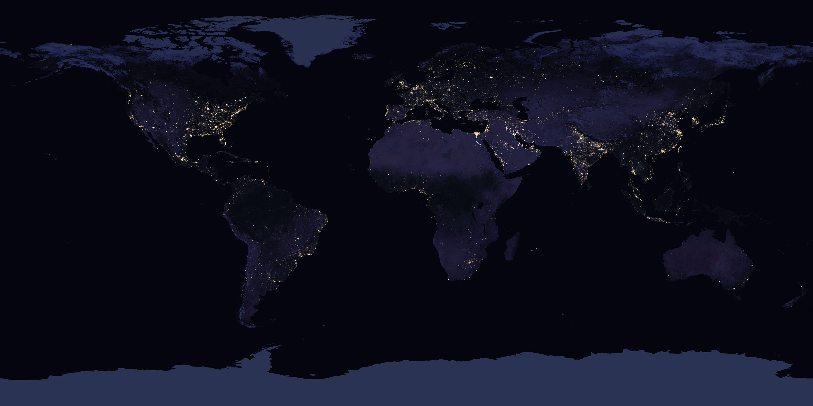
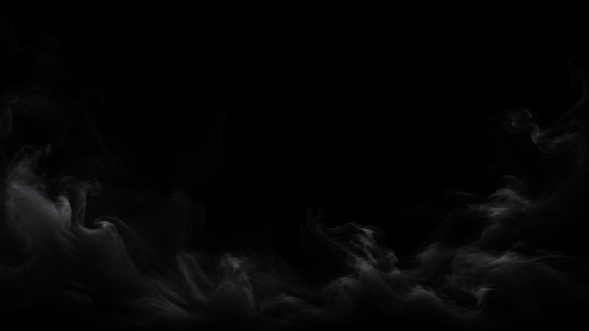

El sistema visual completo de Flip Flop HQ. Negro puro, cifras precisas, profundidad contenida y movimiento con intención.
Logo v4 · dos trayectorias de mercado
FLIP y Q en verde.FLOP y H en rojo.Nombre como tipografía, símbolo como PNG.
Sin badge brillante, reciclaje ni letras FF dentro del símbolo.
#000000
#2a7d3c / tinta #62b676
#dd281c / tinta #f14234
#090909
Manrope · titulares
Geist · identidad / interfaz
20000.00 · TP / SL
Geist Mono · datos
Quiero conocer HQ ↗Explorar la app ▷

NASA Black Marble. Textura archivada sobre geometría 3D procedural.

Humo sobre negro, profundidad sutil y secuencia espacial por scroll.